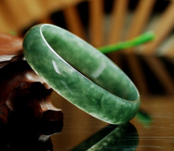
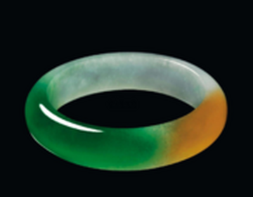
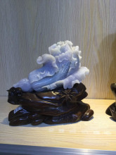
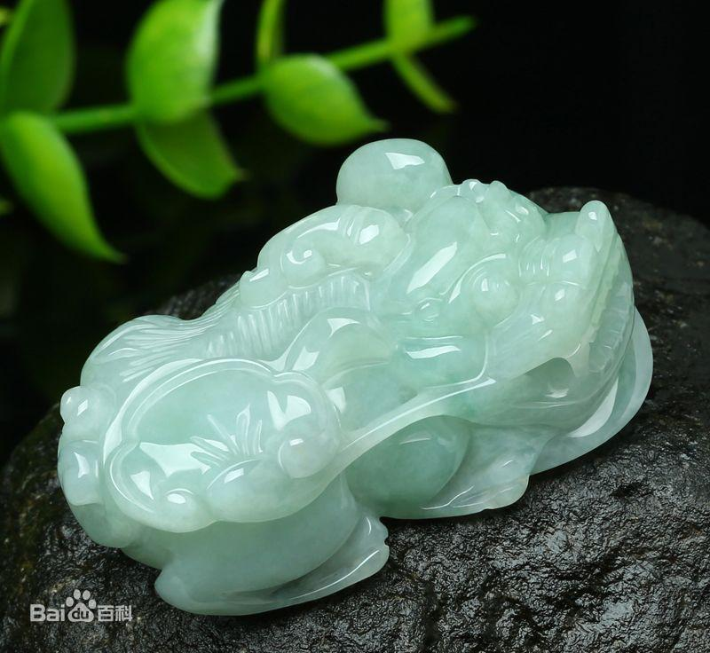
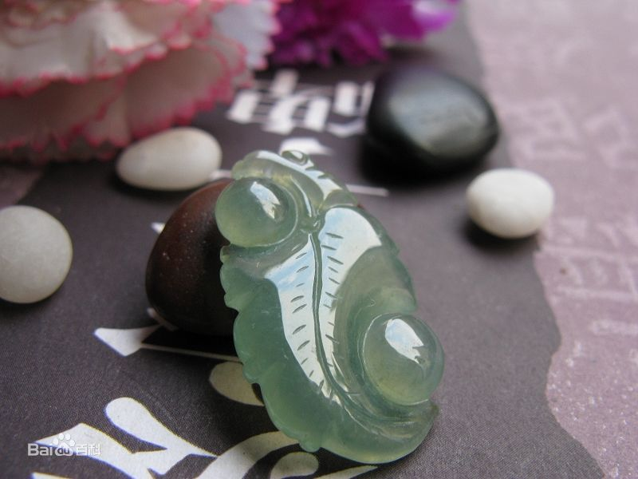
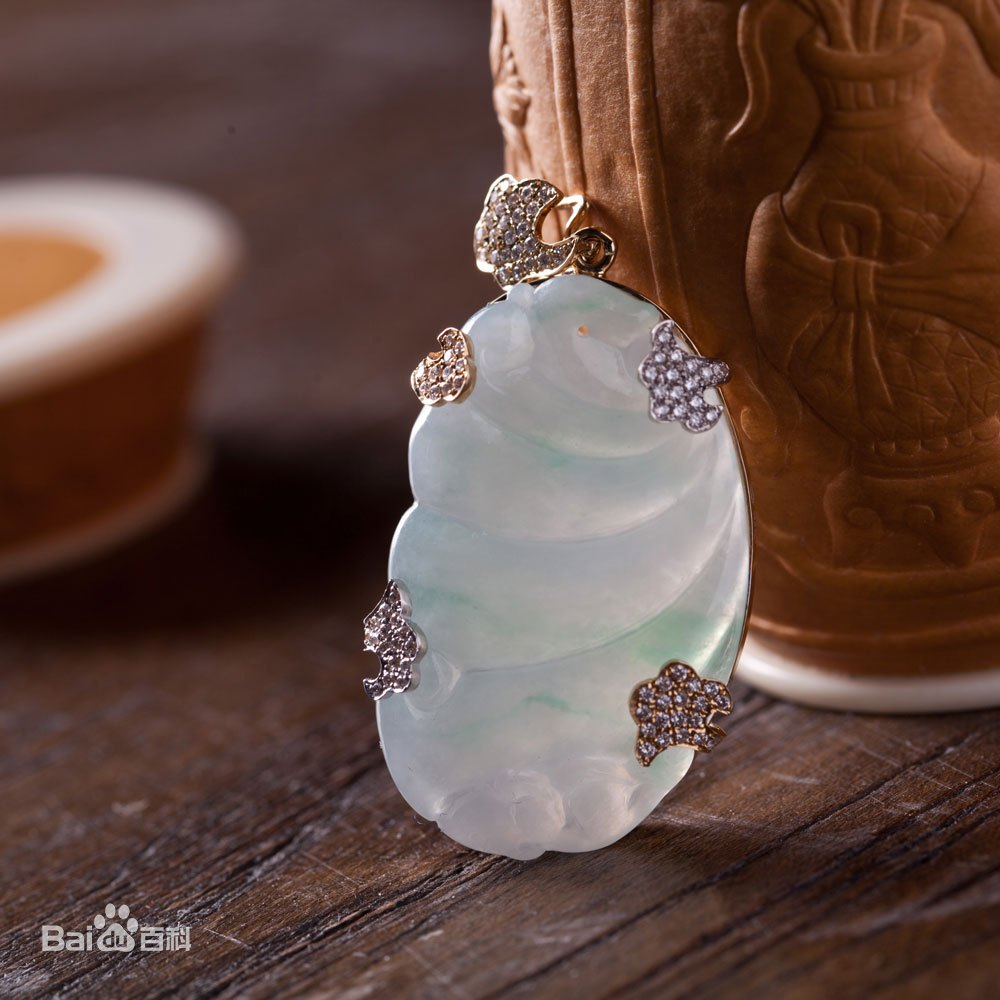
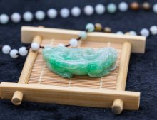

冰种翡翠
水种翡翠
豆种翡翠
老坑种翡翠
花清翡翠
油清种翡翠
冰糯种翡翠
芙蓉种翡翠
紫罗兰翡翠
白底清翡翠
翡翠（jadeite），也称翡翠玉jadites [1] 、翠玉、缅甸玉，是玉的一种。翡翠的正确定义是以硬玉矿物为主的辉石类矿物组成的纤维状集合体 [2] 。但是翡翠并不等于硬玉 [2] 。翡翠是在地质作用下形成的达到玉级的石质多晶集合体，主要由硬玉或硬玉及钠质（钠铬辉石）和钠钙质辉石（绿辉石）组成，可含有角闪石、长石、铬铁矿、褐铁矿等。






名称由来
翡翠名称来源有几种说法，一说来自鸟名，这种鸟羽毛非常鲜艳，雄性的羽毛呈红色，名翡鸟（又名赤羽鸟），雌性羽毛呈绿色，名翠鸟(又名绿羽鸟)，合称翡翠，所以，行业内有翡为公，翠为母说法。明朝时，缅甸玉传入中国后，就冠以“翡翠”之名。另一说古代“翠”专指新疆和田出产的绿玉，翡翠传入中国后，为了与和田绿玉区分，称其为“非翠”，后渐演变为“翡翠”。
性质
化学成分：硅酸盐铝钠—NaAI〔Si2 O6〕，常含Ca、Cr、Ni、Mn、Mg、Fe等微量元素
矿物成分：以硬玉为主，次为绿辉石、钠铬辉石、霓石、角闪石、钠长石等
结晶特点：单斜晶系，常呈柱状、纤维状、毡状致密集合体，原料呈块状次生料为砾石状
硬度：6.5—7.5
解理：细粒集合体无解理；粗大颗粒在断面上可见闪闪发亮的“苍蝇翅”
光泽：油脂光泽至玻璃光泽，高档品皆为玻璃光泽
透明度：半透明至不透明
相对密度：3.30——3.36，一般为3.33克每立方厘米
折射率：1.65——1.67（点测法）
颜色：颜色丰富多彩，其中绿色为上品
发光性：浅色翡翠在长波紫外光中发出暗淡的白光荧光，短波紫外光下无反应
翡翠雕刻的品类包括玉佛、如意、平安扣、竹节、长命锁、福豆、貔貅等等
相关常识
评价翡翠有“地”、“好水”、“翠得好”等术语。“地”指翡翠中其他颜色，地少翠多为上品；“好水”指翡翠质地细嫩润滑，通透清澈，晶莹凝重，碧亮喜人，也称之为“俏”，反之称“水差”；“翠得好”当合“浓、阳、正、和”四字，“浓”是指浓而不淡，如雨后冬青，“阳”是指鲜艳明亮，“正”指无杂色、邪色相混，“和”是指翠得均匀无深浅之分，反之则称“淡、阴、邪、花”。
